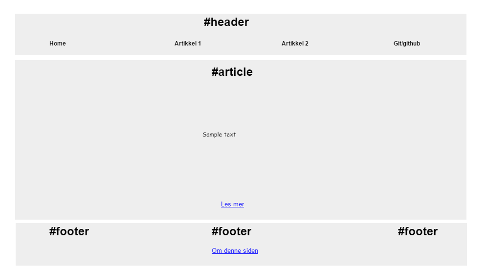

Pencil ble brukt for å lage skissene for forsiden og artikkelsiden. Jeg synes det var mest oversiktlig å dele opp forsiden i 4 rader; Header, artikkler, timeplan/skole og footer. Jeg tenkte at et bilde av timeplanen vil være veldig liten så jeg gjorde slik at når en holder musa over bildet, vil bildet forstørres med 1.5x.
Artikkelsidene tenkte jeg ikke trengte flere enn en boks, så jeg lagde en stor div for å sette alt av overskrift, tekst og bilder. Jeg har bygd opp artikkelsidene ved skrive litt om emnet også deretter et bilde eller et eksempel av emnet jeg skrevet om.
| URL | Beskrivelse |
|---|---|
| w3schools | Fikk inspirasjon til farger. |
| Siteinspire | Fikk insipirasjon til design av nettsiden. |